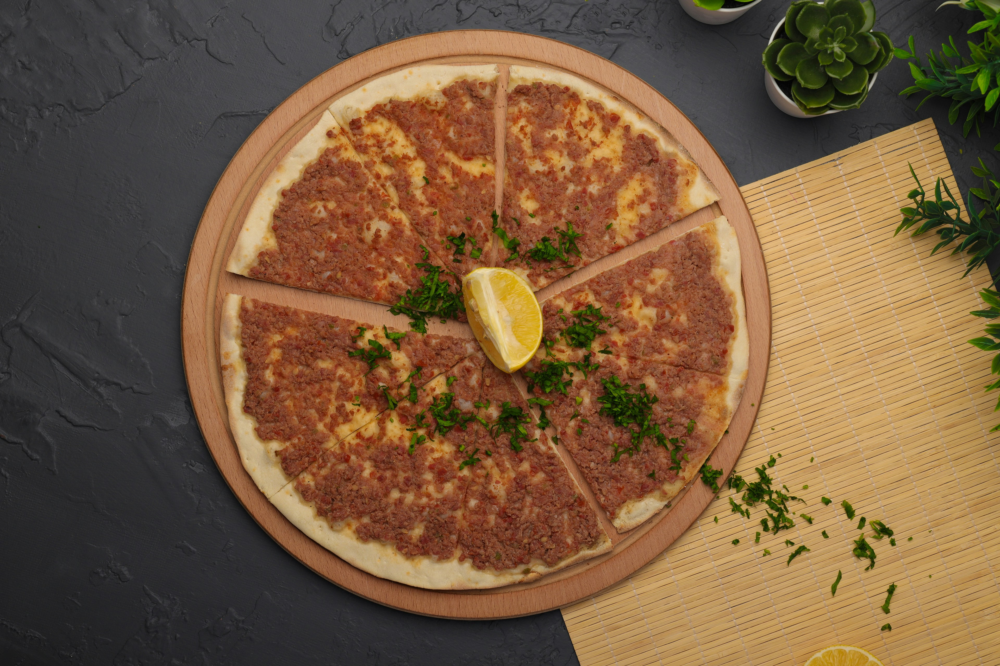

Lahmacun

Açıklama
Lahmacun, Türkiye'ye özgü en muazzam yemeklerden biridir. İnsanın yedikçe yiyesi gelir. Özellikle küçük fırınlarda, genelde mahalle içi fırınlarda o kadar güzel yapan ustalara rast gelme ihtimaliniz vardır ki!. Türkiye'yi ziyaret ederseniz mutlaka ama mutlaka lahmacun yemeğimizi deneyin. Memnun kalacağınıza asla şüphem yoktur.
Malzemeler:
- Kıyma: 300–500 gr orta yağlı veya kaburga kıyması
- 2-3 adet kuru soğan
- 2-3 diş sarımsak
- adet domates (kabuksuz ve çekirdeksiz)
- 1-2 adet kapya (kırmızı) biber ve 2 adet yeşil biber
- Yarım demet taze maydanoz
- 1 yemek kaşığı biber salçası
- Yarım çay bardağı sıvı yağ veya zeytinyağı
- 1 tatlı kaşığı tuz
- 1 tatlı kaşığı pul biber veya isot
- 1 çay kaşığı karabiber ve kimyon
Hazırlanışı:
- Unu derin bir kaba alın ve ortasını havuz gibi açıp tuz, toz şeker ve mayayı ekleyin.
- Ilık suyu ve sıvı yağı azar azar ekleyerek ele yapışmayan yumuşak bir hamur elde edene kadar yoğurun.
- Hamurun üzerini nemli bir bezle örtün ve oda sıcaklığında yaklaşık 30-40 dakika mayalanmaya bırakın.
- Soğan, sarımsak, domates, kırmızı ve yeşil biberleri robottan geçirin veya çok ince olacak şekilde zırhlayın. Suyu çok fazlaysa acı tadını önlemek için sebzelerin fazla suyunu hafifçe süzün.
- Çektiğiniz sebzeleri geniş bir kaba alın ve üzerine kıymayı, ince kıyılmış maydanozu, salçayı, sıvı yağı ve baharatları ekleyin.
- Tüm malzemeleri macun kıvamına gelene kadar elinizle iyice yoğurun. Harç çok katı olursa 2-3 yemek kaşığı su ekleyerek sürülebilir bir kıvam yakalayın.
- Mayalanan hamurdan mandalina büyüklüğünde bezeler koparın ve her birini hafif unlanmış tezgahta yemek tabağı büyüklüğünde incecik açın.
- Açtığınız hamurların üzerine hazırladığınız kıymalı harçtan 1-2 yemek kaşığı koyun ve kenarlarında boşluk kalmayacak şekilde elinizle ince bir tabaka halinde yayın.
Home